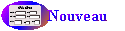

Aide de la liste des articles
Cet écran affiche la liste des articles par ordre alphabétique
en fonction de critères. Il vous permet de :
- Consulter ou modifier les informations (fournisseurs)
d'un article :
- Cliquer sur la première lettre du nom en haut de l'écran
pour afficher la liste qui contient le client qui vous intéresse
- Cliquer sur le nom pour afficher la fiche
de l'article avec ses fournisseurs
- Consulter ou modifier les informations (mouvement)
d'un article :
- Cliquer sur la première lettre du nom en haut de l'écran
pour afficher la liste qui contient le client qui vous intéresse
- Cliquer sur la date de dernier mouvement pour afficher la fiche
de l'article avec ses derniers mouvements
- Créer un nouvel article :
- Cliquer sur le bouton en
bas de l'écran. Une fiche article vierge s'affichera pour créer
un article
- Filtrer la liste des articles :
- Cliquer sur une lettre pour n'afficher que les articles dont le nom
commence par cette lettre
- Cliquer sur Tous pour afficher tous les articles indépendamment
de leur nom
- Choisir un Type d'article pour n'afficher que les articles de ce
type
- Choisir une Catégorie d'article pour n'afficher que les articles
de cette catégorie
- Cocher "En rupture" pour ne voir que les articles à
commander
- Ces filtres peuvent se cumuler : Par exemple, il est possible de
n'afficher que les articles ayant un certain type d'article et une
certaine catégorie.
Voir aussi les trucs et astuces.